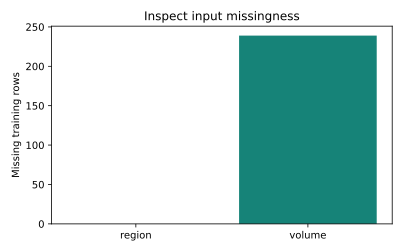
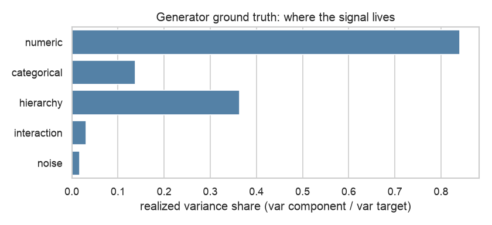

Data Matrix Ingestion, Missing Routing & Categorical Encoders¶
Machine learning algorithms live or die on how they handle dirty tabular real-world inputs: high-cardinality categoricals, mixed numeric types, and widespread unrecorded values.
mltreelib builds its data ingest and split evaluation on a zero-copy Rust columnar engine (mltreelib-core::frame) that treats missingness as a first-class branch direction rather than a flaw to be masked with heuristic imputations.
flowchart LR
A["Raw Tabular Inputs\n(Pandas / Polars / CSV / Parquet)"] --> B["mltreelib Ingest Engine\nType Inference & NA Normalization"]
B --> C{"Missing Values Present?"}
C -- "Yes" --> D["Native Routing Policy\nSurrogate Splits or Learned Missing-Left"]
C -- "No" --> E["Zero-Copy Column Slices"]
B --> F{"Categorical Features?"}
F -- "Low-Cardinality" --> G["Native Integer Indexing\nBitset Subset Partitions"]
F -- "High-Cardinality" --> H["Empirical Bayes Target Encoding\nShrinkage toward Global Prior"]
D --> I["Tree Split Engine & Binned Histograms"]
E --> I
G --> I
H --> I
classDef blueBox fill:#1e3a8a,stroke:#3b82f6,stroke-width:2px,color:#ffffff;
classDef greenBox fill:#14532d,stroke:#22c55e,stroke-width:2px,color:#ffffff;
classDef grayBox fill:#334155,stroke:#64748b,stroke-width:2px,color:#ffffff;
class A,B grayBox;
class C,F blueBox;
class D,E,G,H,I greenBox;1. Native Missing Value Routing (Surrogate Splits)¶
Standard decision trees force users to impute missing entries (mean, median, mode) or drop rows entirely. Mean imputation distorts correlation structures and destroys predictive signal in missingness itself.
mltreelib.ModelTree handles missing values natively during tree growth:
1. Learned Missing Direction (missing_dir="learned"): Evaluates whether routing missing rows to the left child or the right child minimizes post-split deviance, picking the optimal direction.
2. Surrogate Splits (missing_dir="surrogate"): When a primary split feature is missing at prediction time, the tree evaluates an ordered ranking of backup surrogate features that best mimic the primary split partition.


Complete End-to-End Missing Routing Example¶
import numpy as np
from mltreelib import ModelTree, Metrics
# 1. Generate multi-sensor telemetry with correlated features and sensor dropouts
rng = np.random.default_rng(2026)
n_samples = 1500
# Primary sensor reading and redundant backup sensor
primary = rng.normal(loc=50.0, scale=10.0, size=n_samples)
backup = 0.85 * primary + rng.normal(loc=0.0, scale=3.0, size=n_samples)
temperature = rng.uniform(low=20.0, high=90.0, size=n_samples)
# Physical failure response depending strongly on primary sensor threshold (> 58.0)
y = ((primary > 58.0) & (temperature > 50.0)).astype(float) + rng.normal(0, 0.1, n_samples)
# Inject 30% realistic sensor dropouts (represented by None / NaN)
primary_with_missing = [None if rng.uniform() < 0.30 else round(val, 2) for val in primary]
backup_clean = [round(val, 2) for val in backup]
temp_clean = [round(val, 2) for val in temperature]
X = [[p, b, t] for p, b, t in zip(primary_with_missing, backup_clean, temp_clean)]
feature_names = ["sensor_primary", "sensor_backup", "temperature"]
# 2. Train ModelTree with native learned missing routing
tree = ModelTree(
leaf="linear",
max_depth=3,
min_rows=30,
missing_dir="learned", # Deviance-optimal routing for missing rows
)
tree.fit(X, y.tolist(), col_names=feature_names)
# 3. Inspect splits and assigned missing directions
print("Fitted Tree Splits & Native Missing Direction:")
for i, s in enumerate(tree.splits()[:3], 1):
direction = "LEFT" if s.get("missing_left", True) else "RIGHT"
print(f" Split #{i}: Feature '{s['col']}' <= {s['threshold']:.2f} | Missing Rows Route -> {direction}")
# 4. Predict on new record with missing primary sensor
test_sample = [[None, 62.5, 75.0]]
predicted_risk = tree.predict(test_sample)[0]
print(f"\nPrediction for Missing Primary Reading (Backup=62.5, Temp=75.0): {predicted_risk:.3f}")
2. Categorical Encoders: Empirical Bayes & Ordered Target Encoding¶
Tabular data features categorical variables ranging from low-cardinality ordinal levels (e.g. Education: High School, Bachelor, Graduate) to high-cardinality entities (ZIP codes, merchant IDs, product SKUs).
| Method | Flavour | Mechanism | Overfitting Guard |
|---|---|---|---|
TargetEncoder |
Smoothed Mean | \(w \cdot \bar{y}_c + (1 - w) \cdot \bar{y}_\text{global}, \quad w = \frac{n_c}{n_c + m}\) | Empirical Bayes \(m\)-smoothing toward global prior |
CatBoostEncoder |
Ordered Target | Running target mean accumulated over random permutations | Dynamic permutation eliminates in-sample leakage |
OneHotEncoder |
Sparse Dummies | Boolean bitsets for low-cardinality variables (\(K \le 16\)) | Tree branch regularization |
from mltreelib import TargetEncoder, CatBoostEncoder
# High-cardinality merchant categories and chargeback labels
merchants = ["electronics", "apparel", "electronics", "travel", "apparel", "electronics"]
labels = [1.0, 0.0, 1.0, 0.0, 1.0, 1.0]
# 1. Smoothed Empirical Bayes Target Encoding
target_enc = TargetEncoder(smoothing=5.0)
target_enc.fit(merchants, labels)
encoded_features = target_enc.transform(merchants)
print("Smoothed Target Encodings:", [round(v, 3) for v in encoded_features])
# 2. Ordered Target Encoding (Leakage-Free Training)
cb_enc = CatBoostEncoder(smoothing=5.0, seed=2026)
ordered_features = cb_enc.fit_transform(merchants, labels)
print("Ordered CatBoost Encodings:", [round(v, 3) for v in ordered_features])
3. The Typed Ingestion Frame & Variance Decomposition¶
At the Rust core level, datasets are ingested into mltreelib-core::frame::DataFrame. The engine automatically tracks column data types, computes realized variance shares, and isolates zero-variance or constant features before tree growth.

from mltreelib.data import DataFrame
frame = DataFrame.from_dict({
"cement": [540.0, 540.0, 332.5],
"water": [162.0, 162.0, 228.0],
"age": [28, 28, 270],
})
summary = frame.summarize()
for col in summary:
print(f"{col.name:15} | Type: {col.dtype} | Missing: {col.n_missing} | Mean: {col.mean:.2f}")
Related Deep-Dive Suites
- Suite 3: Native Missing Data Routing & Surrogate Splits for full mathematical proofs of surrogate agreement.
- Suite 11: Component & Factor Analysis for dimensionality reduction and whitening.